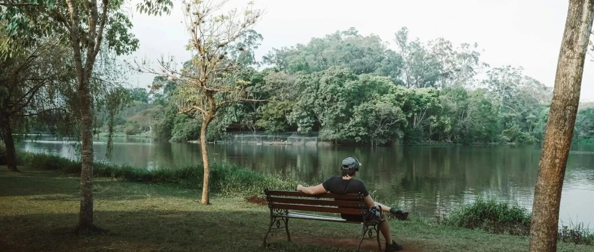

又被毒打得骂骂咧咧~
美股继续反弹。
川普在达沃斯论坛上宣布，与欧洲国家就格陵兰问题达成“协议框架”，并取消原定2月1日生效的惩罚性关税。
恐慌指数（VIX）显著回落，资金从避险资产转向权益市场，科技股受益明显，开启反弹，不过目前市场的避险情绪仍在，主要是1月底科技巨头将陆续发布财报。
Meta大涨5.66%，收盘价648美元，盘中一度触及660美元。利好主要有与核能初创公司Oklo达成协议、宣布Threads平台将于下周起向全球用户推出AI驱动的新广告功能，进一步拓展商业化路径。
对于Meta这类大涨大跌的票，最好的应对方式是逢大跌买入，大涨后适量减仓，控制好仓位和资金，以应对后续的市场突发状况。近期的波动区间就是610-660。
反过来操作的大聪明，就有苦吃了，大涨舍不得腾出些资金和仓位，大跌时又恐慌割肉。这种最后又是被毒打得骂骂咧咧地，不肯正视自己的问题，就一律归咎于美股难做，收割自己。
其他的没有操作，没什么机会。这两天净看美股搔首弄姿了，这大涨大跌的频率，比诸位的幸福生活还频繁…
每天会跟孩子们视频聊天半小时，然后让他们去睡觉。这次刚好我父亲也在，就凑一块多聊了会。
他在家里跟孩子们聊起了年轻时的事，我坐在视频这端听写，以前从来没听他说过自己过往的事：
上学时遇到十年浩劫，很想继续学，但各方面的原因导致学业未能持续下去；工作时没什么工作可以做，想进工厂还要看“成分”（出身等）好不好，要有推荐信或保荐人。
那会去工厂当工人是一份很好很体面的工作，跟现在考公挤体制内一样热门。
后来十年浩劫过去，拨乱反正，改革开放，普通人才慢慢有了机会。
回头看历史，大多数人以为有稳定的工作和生活，是最稳妥、安全的。但其实，追求“稳定”，大多数情况下，才是人生最大的风险。
这世上，没有永恒的“稳定”，最好的稳定是不断构筑现金流，不断提升自身的能力和水平，让自己始终处于有选择的境地，而不至于陷入被动。
但普通人定义的“稳定”，并不是能力和现金流不断提升，而是“安逸”。安逸其实是毒药。
翻看历史会发现一个很残酷的实事：在坐的各位，祖上大多数是富贵人家，只有富贵人家才有机会留下后代。唯一的例外，是最近几十年的社会变迁，让大多数普通人也有机会繁衍。
大多数人压根不读历史，或者读史就是纯粹地从官本位的角度去看书，雄图霸业看得热血沸腾，不自觉代入其中；而不是民本位角度看历史，“岁大饥，人相食”。
现在的网络，每天最擅长的事就是造神和毁神。把一个人捧上天，又把一个人踩到泥沼里；看一个人要么“大奸大恶”，要么高尚纯洁得如“白莲花”。
小学生思维，没有意识到“人”这类个体的复杂性和多样性。
我经常说，不要神化任何人，不值得。
也经常跟孩子们说，要自己多去看看世界，不要被别人主导了自己的三观，不要把别人的观点当成自己的观点。
因为你不知道别人经历了什么，人的观点只会跟他所接触的群体、信息、经历呈正相关。
疫情那几年的魔幻经历，还历历在目，各路牛鬼蛇神纷纷登场，动不动就：xx死了几百万人、人吃人，自己风景独好。
这种风气，最近又卷土重来，让诸多急需精神慰籍的群体，颅内高潮。这也不是什么坏事，有助于我们精准识别，然后敬而远之。
一味美化或丑化一个人、一个地方的行为，都是非黑即白的二极管行径，不是斩杀线，而是斩傻线。
一个人或地区，存在即合理，再差也有可取之处，再好也有不足的地方。
这世上，哪有什么天堂，自己脚踏实地努力打拼创造美好生活，就是通往天堂的路。
至于斩杀线，哪里都有。之前写过，老美离婚容易掉层皮甚至破产，因为男方要一直给钱至女方找到下家结婚，所以有些男性干脆做流浪汉几年没收入，断供女方，变相逼着她找下家，然后自己解脱了再上岸。
至于其他再夸张的，我自己就没接触过了，也没听过，公司这十五六年，有过数百号员工，典型的中高产群体（年收入中位数约33-36万美元），没接触过底层，非我所能理解。但我始终觉得，底层无论在哪都不容易。
那些把老美描述成天堂的，非蠢即坏，老美不是天堂，也不是地狱。过去几年，民主党放了许多非法移民进来，其中有很多人渣，败坏治安，这是事实。老美的生活相对好很多，也是事实。
咱们也一样不容易，35岁职场再就业难、毕业即失业、买“保交楼”、高位接盘房子跌成“负资产”、企业经营困难…
但也有高端制造业和科技在快速发展等，要有美好生活，有机会就往钱的方向去，往增量趋势明显的行业去，而不是呆在存量行业里卷并抱怨。
老三说他长大以后要帮助很多很多的人，我让他先认真学习，把能力锻炼起来。
希望他长大以后，不要做公益。我自己的体会是做公益特别难，比做商业赚钱难太多了。可以说做公益非常难，赚钱容易，做公益难如吃屎。
键盘侠太多，都在用对圣人的要求去要求你做好，道德绑架的束缚和绑架都很多，阴阳怪气的多，抬杠的多，冷嘲热讽的也多。于是，自己给自己的束缚也多，但最后，只剩“自我安慰”这个精神层面的价值点。
所以公益这种事，要么不做，要么就只能硬着头皮做下去。
其实公益最好的办法，是找到并挖掘当地的特色，然后将它产业化进入市场，以产业帮扶带动更多人就业，创造收入，这样才能长久，不然很容易半途而废，坐吃山空。
说到底，要么是现在的网民受教育质量不行，要么是读书读傻了，总之下沉市场非常庞大。
据公开数据，截至2024年底，咱们大陆14亿人口中，有初中学历的人数约为4.87亿人，占总人口的37%；上过大学（专科及以上）的人口约2.18亿，占总人口的15.8%；出过国的大概1.5亿+人。
所以不要去跟别人对线，没必要，你压根不知道你对线的另一方，是不是小学生或初中生，也有可能是踩缝纫机的，背负KPI。
遇到了，避开就行；看到了，眼不见为净，不必非要争个输赢。把精力和时间，放在自己的成长上，放在陪伴家人上。
世界纷纷扰扰，唯有自渡，才是超脱之法。
就这样吧。
免责声明：本人提供的信息仅供参考，不构成投资建议。本人的交易不代表任何立场；投资者应根据自身财务状况、投资目标等情况自主做出投资决策并承担投资风险。投资有风险，入市需谨慎。